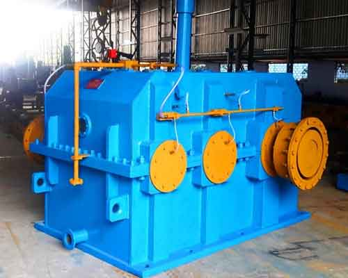
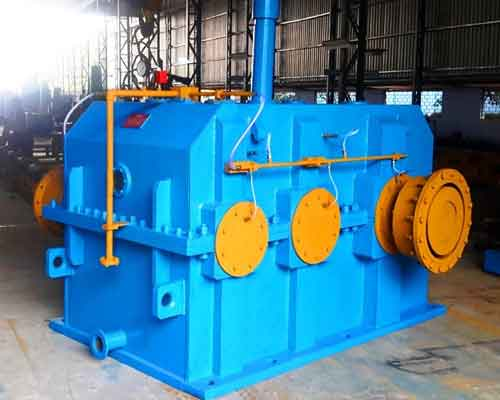

Sgi
rolling mill macinery
Shiksha Group Of Industries
A Complete Rolling Mill Machine Equipment


 

Our Products
Steel Rolling Mills Plants
SGI have a leading role in designing, manufacturing & erection of hot steel rolling mill plants. We know very well the competition in the market, so we highly concentrate at the quality, accepted in the market. Thus, we provide our customer valuable products at Reasonable prices with facilitations & services as consultancy, plant designs & layouts.
SGI works Leading ahead for its various types of products which are being used at international Glance. Now we are in process of establishing high production & high speed steel rolling mills.
TMT/Rebar Rolling Mill Plants
TMT Rolloing Mill Plant TMT Rolloing Mill Plant Basic Design & layout Fully automatic / manual {as customer desired} High speed Producing 8 MM to 40 MM TMT bars High production Guiding, cutting, cooling, coiling & handling equipment
Housingless Stands
Project Engineering • Supply • Services Stand-mounting variants: Horizontal mill stands Multigroove rolls Grooves changed by shifting the stand Stands changed by shop crane Stand-mounting variants: Vertical mill stands Top-driven rolls Multigrooves rolls Stands changed on stand changing rig Use of concrete supports Stand-mounting variants: Horizontal/Vertical mill stands Multigroove rolls Grooves changed by shifting the stand Stands changed on stand changing rig Use of concrete supports
Automatic Cooling Beds
We design & develop an extensive range of material handling equipment that meets diverse applications across industries. One of our prime products is Cooling bed that is manufactured as per the application area. These cooling beds are in conformance with industrial standards & also comply with safety norms. Our experience in design and manufacture enables us to meet buyer's specific need & offer diverse range that suffices the operational requirements.
Siemens VAI cooling beds are designed using standard elements that can be combined in accordance with plant product mix requirements and production capacity. Full mechanical component standardization assures constant equipment quality, as well as high performance levels. Send Online Query
TMT Quenching Box
tmt-quenching-boxThere are various route to increase the strength of steel used tor construction. One ot the oldest route is the CTD Bar route. Here the bars are cold twisted after rolling. Another method is the Micro Alloying of steel to get high strength.
The problem with both these systems is the high labour, cost and time. In CTD bars the cost of twisting and this is the main bottleneck in all the mills. For Micro alloying the cost alloying elements is very high.
To counter these problems, SMT has developed High Strength with High Ductility TMT Quenched & Tempered Ribbed Bars of Grade Fe 415 & Fe 500 confirming to IS 1786 We are happy to offer our International Computerized Version with the latest development” Extended Nozzles’.
Flying Shear or TMT Shearing Machine
Functional Description of Flying Shear The shear will be located after the finishing mill and before the cooling bed. One (1). encoder will be installed at the motor/pinion stand of the finishing stand. This will sense the exact RPM of the finishing roll. The mill operator will decide the length of the BAR be cut, the exact roll dressed and will feed the data to the MMI (Man Machine Interface).
Tail breaker
Tail breaker is configured following the flying shear and before the cooling bed to decrease the velocity of TMT bars. It operates through AC and DC variable drives. The rolls are separated by a pneumatic cylinder. It includes a steel body, pneumatic cylinder, top and bottom arms and rolls.
universal couplings & Spindle
The universal couplings & Spindle are provided with a purpose to eliminate any misalignment or angular inclination at drive side so that the cluster of rolls forms properly aligned, right angled matrix with respect to pass line.
Gear Couplings
A Gear Coupling is used for transmitting torque and power between two shafts. It is of compact assembly capable to deliver high rupturing loads at high speeds. The design of these couplings such that it will accommodate angular, off set or combined angular off set misalignment with in allowable ratings and permits axial float or thermal expansion of connected shafts.
Gears of the coupling improve the accuracy of the fit which results in smoother and quieter operations and offers long service life with minimum maintenance. The large area of lubricated surface also cushions shock and permits fairly high – speed operations.